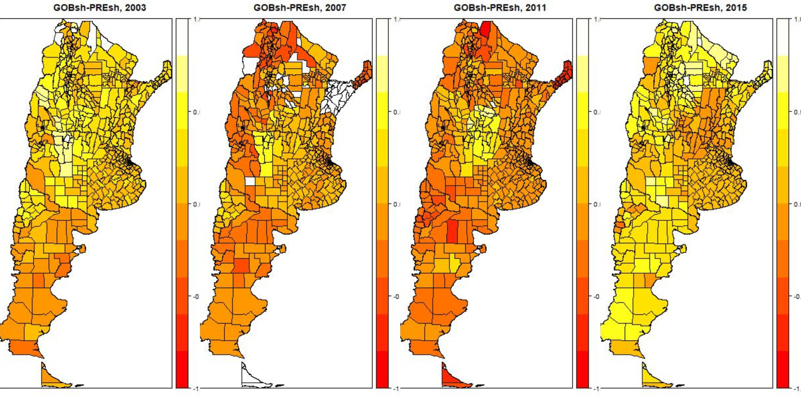
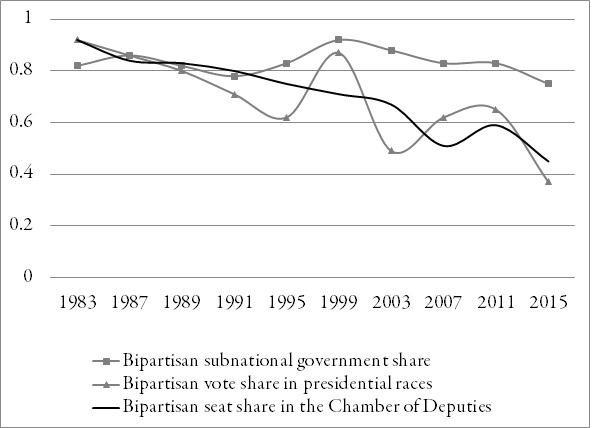
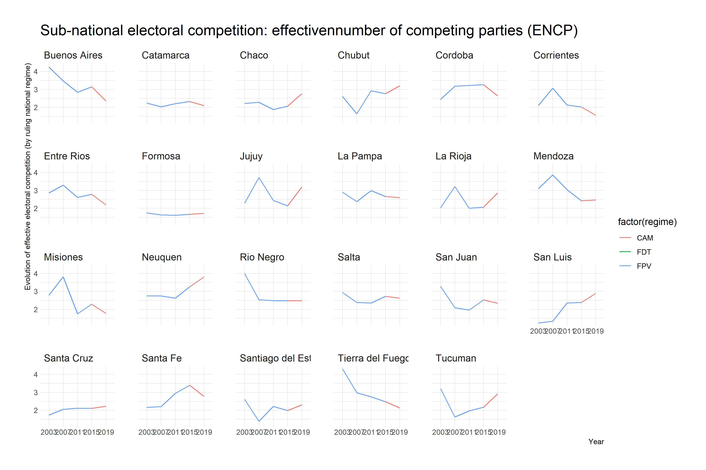
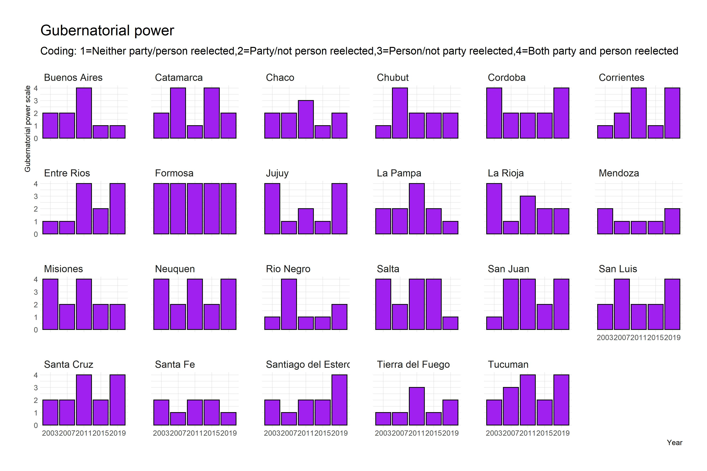
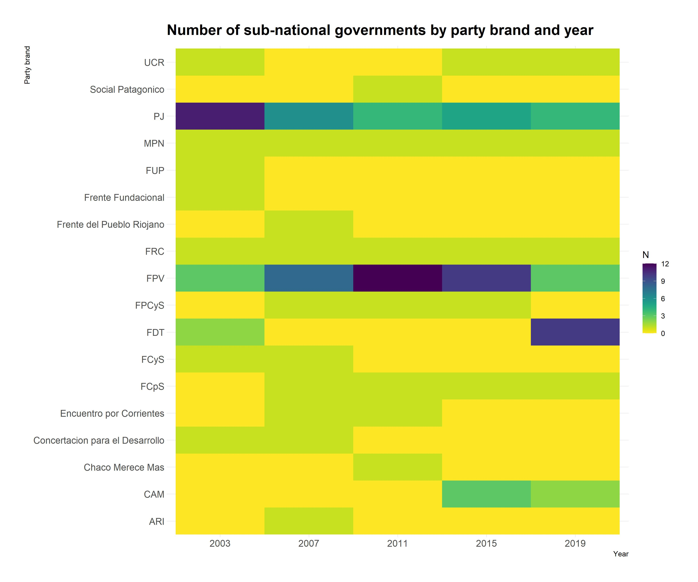
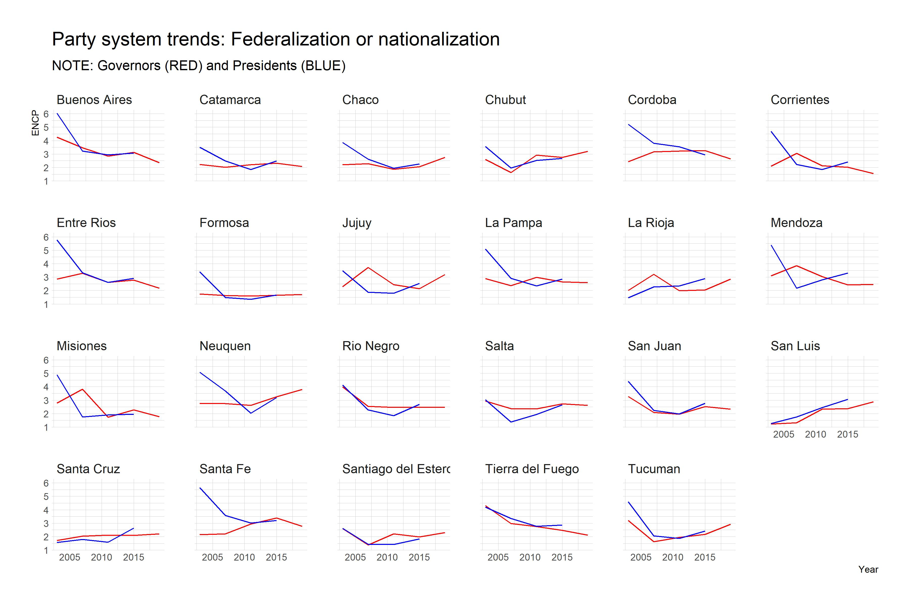
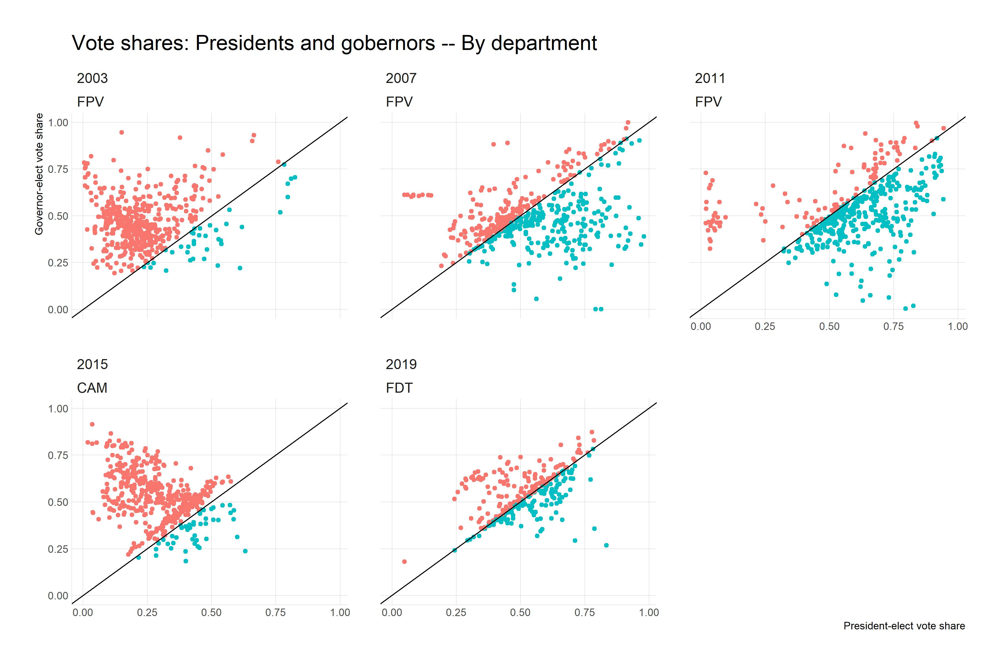
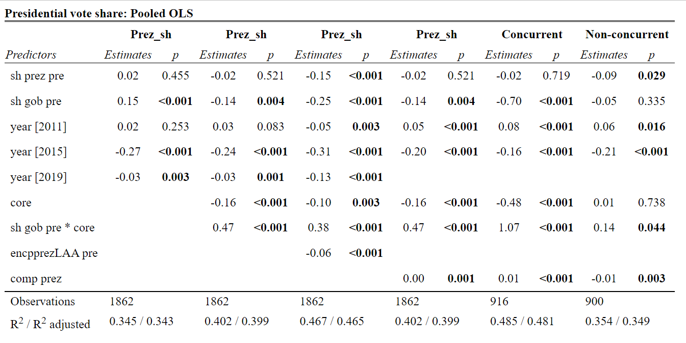
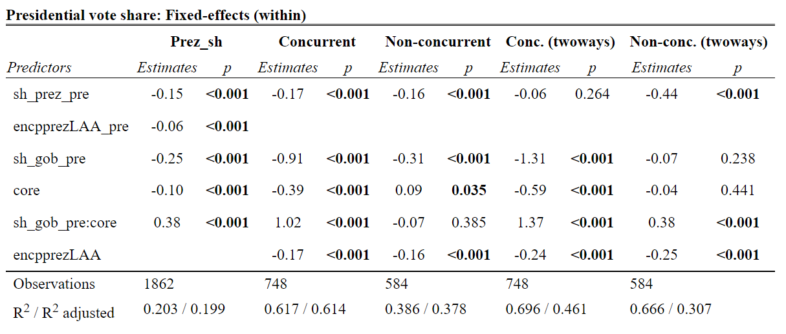

Ley 1. Los sistemas de votación por mayoría en una elección conducen a un sistema bipartidista
Ley 2. Los sistemas de votación por representación proporcional conducen a un sistema multipartidista.
Ley 3. Los sistemas de votación por mayoría en 2 vueltas llevan a un sistema multipartido con tendencia a formar coaliciones
| reelec_P | 2003 | 2007 | 2011 | 2015 | 2019 |
|---|---|---|---|---|---|
| No | 6 | 8 | 6 | 7 | 4 |
| Yes | 17 | 15 | 17 | 16 | 19 |
| reelec_N | 2003 | 2007 | 2011 | 2015 | 2019 |
|---|---|---|---|---|---|
| No | 16 | 16 | 9 | 20 | 12 |
| Yes | 7 | 7 | 14 | 3 | 11 |






